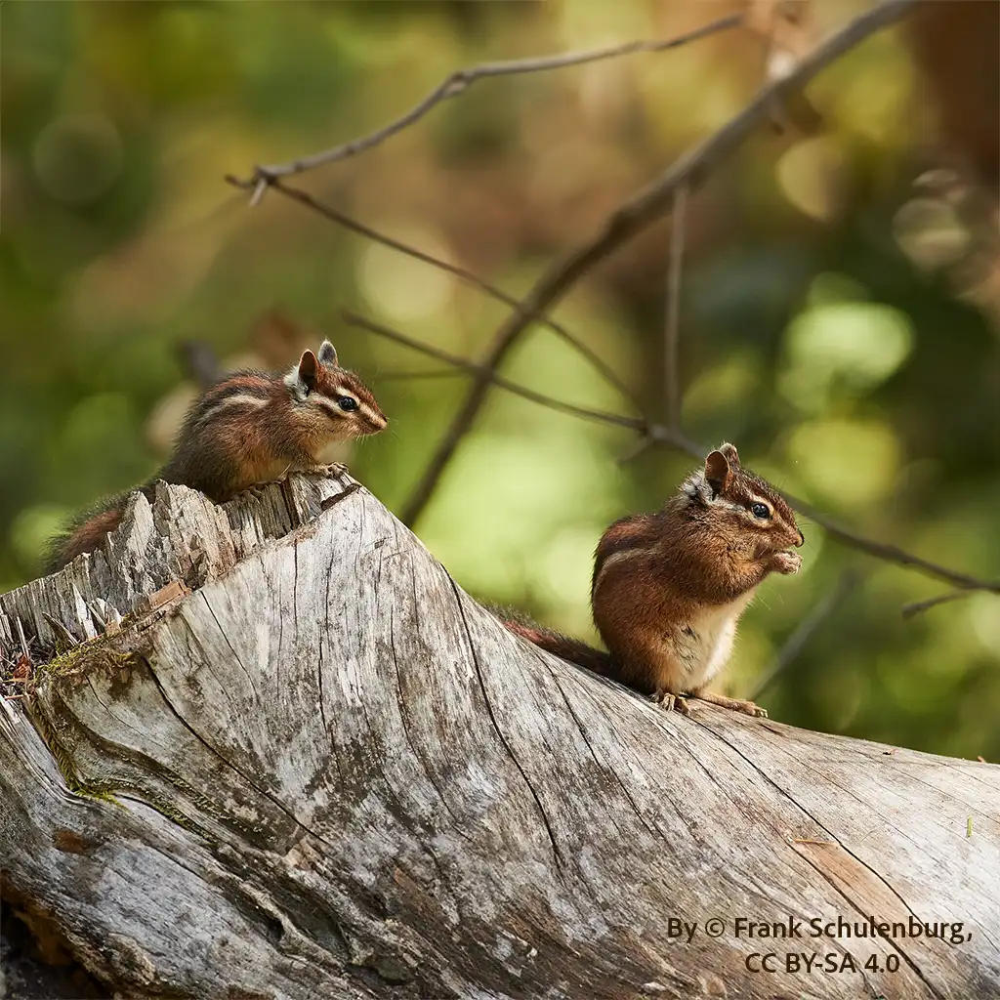
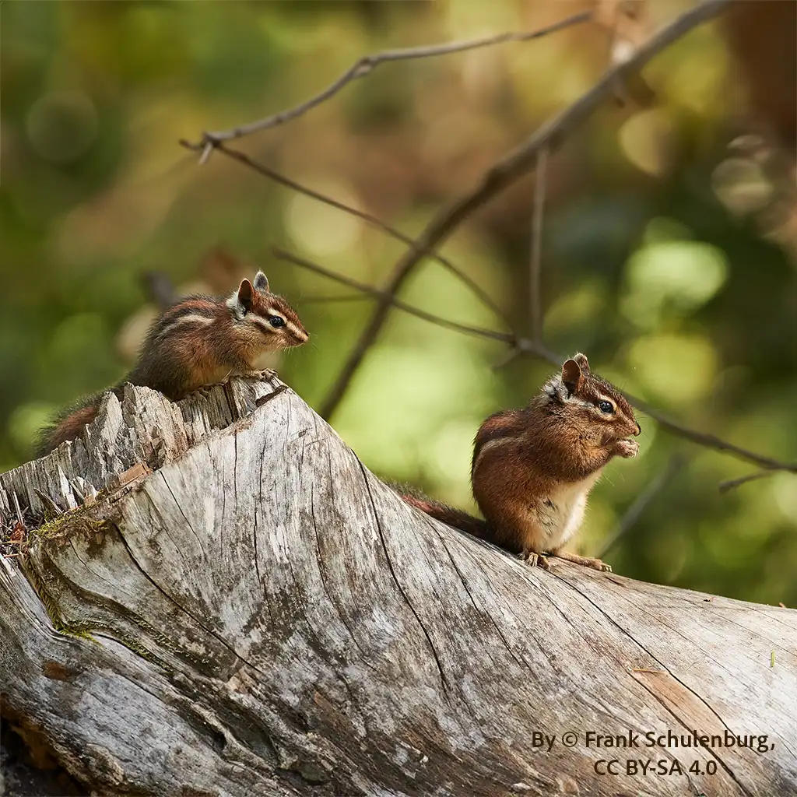

As California was being settled in the 1800s, forests were cleared for towns, farms, and roads. The oak woodlands and conifer forests that native squirrels depended on began to disappear—and with them, so did the squirrels. Then, in the early 20th century, a severe mange epidemic swept through Western Gray squirrel populations, especially in the Sierra and Coast Ranges. In some areas, it wiped out up to 90% of the population.
With native squirrels increasingly absent from cities and parks, people missed them, and wanted to "renature" the cities. Eastern Gray squirrels were brought into San Francisco and Peninsula neighborhoods in the late 1800s, and Fox squirrels were released in Sacramento and Southern California by the early 1900s. These species were more comfortable around people than the natives, and they quickly spread through suburban landscapes, thriving in places where native squirrels no longer could.
 

photos above: California Ground Squirrel and Sonoma Chipmunks
The most commonly seen ground squirrel in California is the California Ground Squirrel (also known as the Beechey Ground Squirrel), which ranges across much of the state. However, California is home to at least 10 species of ground squirrels, many of which are tied to specific habitats, from alpine meadows to desert valleys. Some, such as the Mohave Ground Squirrel and the San Joaquin Antelope Ground Squirrel, are state-listed as threatened and face pressure from habitat loss.
California hosts 13 distinct chipmunk species, all in the genus Neotamias. Unlike the California Ground Squirrel, chipmunks tend to have narrower geographic ranges and are often adapted to specific elevations or forest types. There is no single chipmunk species that is ubiquitous across the state. For example, the Sonoma Chipmunk is localized to the North Coast region, while others live exclusively in alpine zones or southern mountain ranges. None of these populations are currently considered at risk.
Hunting and Eradication fall under different laws - nuisance Fox squirrels can always be eradicated, but hunting is strictly seasonal.
Hunting season in California is usually the second Saturday in September through the last Saturday in January.
Tree squirrels are members of the squirrel family (Sciuridae) that typically build their nests in trees, rather than underground. They are agile climbers, have long bushy tails for balance, and rely on a tree canopy to stay safe from predators.
Unlike tree squirrels, ground squirrels dig burrows and nest underground. You’ll often see them popping out of holes in open fields, meadows, or rocky areas. They have shorter tails and spend much of their time on the ground.
Chipmunks are a related but separate group within the squirrel family. Most species in North America belong to the genus Tamias. They also live in burrows or crevices and are known for their striped backs and cheek pouches, which they use to carry food. Despite their cute appearance, chipmunks are not tree squirrels — they do not build tree nests or spend extended time in the canopy.
In short: If it nests in a tree, it’s likely a tree squirrel. If it lives underground or in rock piles, it’s probably a ground squirrel or a chipmunk.
It's specifically illegal in some counties, but technically not allowed in any county. There is a $1000 fine and the possibility of six months jail time for feeding squirrels in Alameda County. They are wild animals, and the misdemeanor falls under the category of harassment.
The law was put into effect in 1993 because the ground squirrel population at Ceasar Chavez Park in the Berkeley Marina had grown excessively due to park visitors who regularly brought them bags of unshelled peanuts.
The park had been built on a landfill, and the excess population of ground squirrels was undermining the park – literally. The squirrels had built an extensive network of tunnels out to the San Francisco Bay along the entire park perimeter, and the compromised landfill was flooding and eroding rapidly.
The city decided to exterminate the animals, but when an environmental engineer leaked the plans to the U.C. Berkeley student press, protests ensued. The problem was the people, not the animals, the activists contended. And they were right.
By enacting a law prohibiting the feeding of squirrels, spending $8,000 on signage, and creating a large posse of volunteer docents to patrol the park with educational flyers, the squirrel feeding was put to a halt and the squirrel population fell back down to a level that no longer threatened the stability of the landfill park.
TSOC commends these efforts to maintain a balance between humans and wildlife. Although our focus is on tree squirrels, we recognize and encourage these efforts to live in more harmony with nature.
Tree squirrels do not hibernate. Ground squirrels do hibernate in many parts of California, especially in colder inland areas. They slow their metabolism, don’t eat or drink for months, and wake up in spring without muscle damage. This is something scientists are studying for potential human applications in medicine and space travel.
Tree squirrels remain active all year, but may stay in their nests for longer stretches during storms or extreme cold.